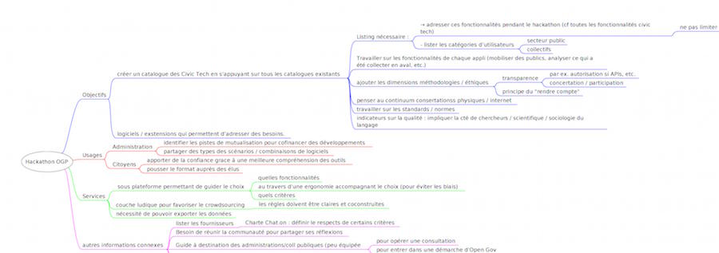

Usages associés: boîte à outils open gov
Mis à jour le 31 mai 2016

{kind=link}
Description du projet
L'objectif de cet atelier est d'accompagner la constitution du Usages associés: boîte à outils open gov réalisé dans le cadre de la préparation du sommet du PGO et listant un certain nombre d'usages renforçant la dynamique de gouvernement ouvert.
L'objectif de cet atelier est d'accompagner la constitution du Usages associés: boîte à outils open gov réalisé dans le cadre de la préparation du sommet du PGO.
Il liste un certain nombre d'usages structurant pour la démarche de gouvernement ouvert au travers d'un prisme à trois facettes :
- les objectifs
- les usagers
- les services proposés.
Il imagine différentes plates-formes ou services susceptibles d'être utiles à l'appropriation et l'exploitation du catalogue et promeut des logiques de mutualisation et coconstruction entre les acteurs intéressés par cette dynamique inclusive et ouverte. Il a pour vocation à inspirer différentes initiatives concourant à l'exploitation du catalogue.
L'atelier dans le cadre de ODN
Ce projet a été initié dans le cadre du lancement du PGO (https://www.etalab.gouv.fr/retour-sur-le-lancement-du-sommet-pgo) le 20 avril 2016 comme soutien au hackathon officiel qui vise à construire d’ici au Sommet de décembre une boîte à outils du gouvernement ouvert, à travers un catalogue recensant les logiciels et solutions techniques pouvant outiller le PGO ainsi que les administrations et la société civile du monde entier dans la mise en œuvre de leurs engagements.
Complémentaire à l'atelier technique qui permet d'aboutir à la conception de ce catalogue de la Civic Tech, cet atelier dédié aux usages réunit tous les acteurs de la Civic Tech afin d'imaginer des réappropriations possibles de la ressource qui sera ainsi accessible. Il rejoint Open Democracy Now lors de sa troisième étape lors de Future en Seine.
Représentant à contacter:

Tous les projets
- A project has no name
- Blockchain & Démocratie
- Boîte à outils open gov
- Budget participatif
- Usages associés: boîte à outils open gov
- Charte du numérique
- Civic Test
- DemocracyOS
- Design & démocratie
- DroitDirect.fr
- Grandma'Votation
- #MAVOIX
- Nesquiz
- Nuances
- OpenBudget
- Logiciels libres dans l'administration
- AgoraLabTV
- Assembl